O que são Milagres Eucarísticos?
Os milagres eucarísticos são manifestações sobrenaturais que confirmam a Presença Real de Jesus Cristo na Eucaristia, conforme ensinado pela Igreja Católica: Jesus está presente verdadeira, real e substancialmente no pão e no vinho consagrados. Esses milagres acontecem quando, por intervenção divina, a hóstia consagrada se transforma visivelmente em carne, o vinho se transforma em sangue, ou ocorrem eventos extraordinários como levitação, incorruptibilidade, sangramento visível ou cura inexplicável relacionada à Eucaristia. Mostrando o quão real é a frase de Cristo “Isto é o meu corpo" (1Coríntios 11, 24).
“Na Eucaristia está todo o tesouro da Igreja, porque nela está o próprio Cristo.” — São João Paulo II
O que configura um milagre Eucarístico?
Ao serem consagradas as espécies na Santa Missa, a substância delas (o pão e o vinho) é transformada em Corpo e Sangue de Cristo, porém ainda permanecendo com os seus acidentes, isto é, com as suas aparências de pão e vinho. Contudo, ao longo dos séculos houve diversos eventos na história da Igreja nos quais ocorreu também a transformação das aparências, a qual pôde ser vista por todos os fiéis, estando em alguns casos conservadas as espécies até hoje.
A esses casos extraordinários se deu o nome de milagres eucarísticos. Embora sejam raros, são muito bem documentados. Diversas exposições trazem uma descrição geral dos casos através da história. São Carlo Acutis, inclusive, realizou durante a sua vida um belíssimo trabalho de mapeamento histórico e geográfico desses milagres, levantando o incrível número de 136 casos notórios, apresentados numa exposição virtual, que pode ser consultada pela internet.
Conheça alguns milagres abaixos:
Durante uma Missa celebrada por um monge que duvidava da presença real de Jesus na Eucaristia, a hóstia consagrada transformou-se visivelmente em carne, e o vinho em sangue diante de todos os fiéis.
- A carne é músculo do coração humano (miocárdio)
- O sangue é humano, tipo AB — o mesmo do Sudário de Turim
- Não há sinais de decomposição, mesmo após mais de 1.200 anos
- Não foi usado nenhum conservante
Este milagre é reconhecido pela Igreja e permanece até hoje exposto para veneração na Igreja de São Francisco, em Lanciano. É considerado o milagre eucarístico mais antigo e mais bem documentado cientificamente.

O Milagre Eucarístico de Bolsena ocorreu na cidade de Bolsena, Itália, em 1263, e é um dos milagres eucarísticos mais conhecidos e antigos.
O padre que celebrava a missa estava com dúvidas sobre a presença real de Jesus na Eucaristia. Quando consagrou a hóstia, ela começou a sangrar, caindo sobre o corporal (lenço litúrgico) e o altar.
“A Eucaristia é sinal visível do amor de Cristo, verdadeiro alimento espiritual que nos une ao seu corpo e sangue, manifestando-se de forma extraordinária neste milagre.”
Contexto histórico
O milagre deu origem à **Festa de Corpus Christi**, instituída pelo Papa Urbano IV em 1264, um ano após o acontecimento, para celebrar a presença real de Cristo na Eucaristia.
Análises e registros
- O tecido ensanguentado da hóstia foi conservado e levado para a Catedral de Orvieto.
- Relatos históricos afirmam que o sangue permaneceu preservado ao longo dos séculos.
- O milagre reforçou a fé na presença real de Cristo na Eucaristia, sendo objeto de veneração contínua.
Curiosidades
- A cidade de Bolsena se tornou local de peregrinação e devoção eucarística.
- O milagre inspirou a construção da **Basílica de Santa Cristina** e a instituição da Festa de Corpus Christi.
- É lembrado até hoje na tradição católica e em exposições de milagres eucarísticos ao redor do mundo.

Durante uma missa, uma hóstia consagrada começou a sangrar, demonstrando a presença real de Cristo na Eucaristia.
O Milagre Eucarístico de Offida ocorreu na cidade de Offida, na Itália, em 1428, e é lembrado até hoje como um dos milagres eucarísticos reconhecidos pela Igreja.
O padre celebrava a missa quando percebeu que a hóstia havia se transformado em carne sangrenta, caindo sobre o altar e o corporal. O fenômeno foi considerado um sinal extraordinário da presença real de Jesus na Eucaristia.
“Na Eucaristia, encontramos o verdadeiro Cristo, que se dá a nós em alimento espiritual, mantendo vivo o seu amor e sacrifício por todos.”
Contexto histórico
O milagre ocorreu em um período de intensa devoção eucarística na Itália, fortalecendo a fé dos fiéis locais e incentivando peregrinações à cidade de Offida.
Análises e registros
- O tecido sangrento da hóstia foi cuidadosamente preservado pela comunidade local.
- Relatos afirmam que o sangue permaneceu intacto, sem sinais de decomposição natural.
- O milagre reforçou a crença na presença real de Cristo na Eucaristia e inspirou a devoção eucarística na região.
Curiosidades
- Offida se tornou um local de peregrinação para fiéis que desejam venerar este milagre.
- O milagre é lembrado em festividades e celebrações eucarísticas locais.
- O acontecimento contribuiu para a tradição de preservar e venerar hóstias eucarísticas milagrosas na Itália.

O Milagre Eucarístico de Cássia aconteceu em 1330, na cidade de Cássia, na Itália, e é um dos milagres eucarísticos mais venerados da tradição católica. O evento está ligado à Basílica de Santa Rita de Cássia e é lembrado como um sinal extraordinário da presença real de Jesus Cristo na Eucaristia.
O que aconteceu?
Naquele ano, um camponês muito doente chamou um sacerdote para lhe levar a Sagrada Comunhão. O sacerdote, contudo, pela falta de reverência e devoção, colocou a hóstia consagrada de forma inadequada entre as páginas de seu breviário para levá-la ao enfermo. Quando abriu o livro na casa do doente, ficou surpreso ao ver que a hóstia tinha se transformado em um grumo de sangue e havia manchado as páginas do breviário com as marcas do sangue.
Assustado e arrependido, o sacerdote dirigiu-se imediatamente ao convento agostiniano para buscar orientação com o padre Simão Fidati, um religioso reconhecido por sua santidade. O padre acolheu a confissão do sacerdote, concedeu-lhe perdão e pediu para ficar com as páginas manchadas de sangue como testemunho do milagre.
“O milagre mostra a reverência devida à Eucaristia e confirma a presença real de Cristo no Santíssimo Sacramento.”
Veneração e reconhecimento
- As páginas manchadas de sangue e a relíquia da hóstia foram preservadas com grande veneração na Basílica de Santa Rita em Cássia.
- O episódio foi mencionado nos Estatutos Municipais de Cássia de 1387, que ordenavam procissões com a relíquia em Corpus Christi.
- Em 1687, houve um ato formal de reconhecimento da relíquia, com a apresentação de um códice antigo contendo notas sobre o prodígio.
- No sexto centenário do milagre (1930), um Congresso Eucarístico foi celebrado na diocese e documentos históricos foram publicados sobre o evento.
Até hoje, a relíquia relacionada ao milagre é venerada na cidade de Cássia, atraindo fiéis e peregrinos que desejam aprofundar sua fé na Presença Real de Cristo na Eucaristia.
Fonte: Site sobre a informação

O Milagre Eucarístico de Santarém é um dos mais antigos e mais conhecidos da Igreja Católica, ocorrido em 1247, na cidade de Santarém, em Portugal. É considerado, ao lado do milagre de Lanciano (Itália), um dos mais importantes da história da Igreja.
O que aconteceu?
Uma mulher, angustiada por problemas conjugais, foi aconselhada por uma feiticeira a obter uma hóstia consagrada para realizar um feitiço de “amarração”. Desesperada, a mulher foi à Missa na Igreja de Santo Estêvão e, no momento da comunhão, fingiu receber a Eucaristia, mas a escondeu em um lenço.
Logo após sair da igreja, a hóstia começou a sangrar misteriosamente, encharcando o lenço. Assustada, a mulher correu para casa e guardou a hóstia em um baú. Durante a noite, uma luz intensa começou a irradiar de dentro do baú, iluminando toda a casa.
“O próprio Jesus quis mostrar que está verdadeiramente presente na Eucaristia, mesmo quando profanada por mãos indignas.”
Reação da comunidade
Arrependida, a mulher confessou tudo a um sacerdote. A hóstia foi levada solenemente de volta para a igreja, acompanhada por autoridades e pelo povo em procissão. Desde então, o milagre passou a ser venerado publicamente.
Conservação do milagre
- A hóstia milagrosa foi colocada em um Relicário de cristal, onde permanece até hoje.
- É possível ver traços de sangue ainda visíveis na Sagrada Partícula.
- O local onde o milagre aconteceu é conhecido como Igreja do Santíssimo Milagre em Santarém.
O milagre foi reconhecido oficialmente pela Igreja e é motivo de grande veneração em Portugal e no mundo. O evento continua a atrair peregrinos que desejam aprofundar sua fé na Presença Real de Cristo na Eucaristia.
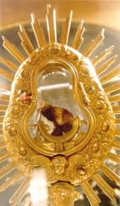
O Milagre Eucarístico de Blanot ocorreu em 1331, na vila de Blanot (diocese de Autun), França. :contentReference[oaicite:2]{index=2}
Durante a Missa de Páscoa, quando o sacerdote Hugues de la Baume, vigário de Blanot, estava administrando a comunhão à senhora Jacquette d’Effour, um fragmento da hóstia caiu inadvertidamente sobre a toalha que dois acólitos seguravam. :contentReference[oaicite:5]{index=5}
O acólito Thomas Caillot alertou o sacerdote:
“Reverendo Pai, regressa porque o Corpo de Nosso Senhor caiu da boca desta senhora sobre a toalha.”
Quando o sacerdote voltou, o fragmento havia desaparecido, e no seu lugar surgiu uma mancha espessa de sangue sobre a toalha. Desejando agir, ele levou a toalha para a sacristia e tentou lavá-la com água, mas a mancha não só permaneceu como se tornou mais intensa. :contentReference[oaicite:8]{index=8}
Movido pela situação, ele então recortou a parte manchada da toalha e a colocou em reliquiário, dirigindo-se aos fiéis:
“Minha boa gente: aqui está o Preciosíssimo Sangue de Nosso Senhor Jesus Cristo, pois lavei e torci esta toalha repetidas vezes e não consegui tirar esta mancha dela.”
Documentação e veneração
- O bispo Pierre Bertrand da diocese de Autun ordenou uma investigação canônica sobre o caso. :contentReference[oaicite:11]{index=11}
- A relíquia da toalha manchada permanece preservada na vila de Blanot e é objeto de veneração anual, especialmente na Festa de Corpus Christi. :contentReference[oaicite:13]{index=13}
Curiosidades
- Este milagre é considerado um dos mais antigos milagres eucarísticos documentados na França. :contentReference[oaicite:14]{index=14}
- Reforça a doutrina da presença real de Eucaristia — que o Corpo e Sangue de Cristo estão verdadeiramente presentes sob as espécies de pão e vinho.
Fonte: site Milagres Eucarísticos – Roberto Adriano.
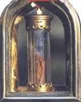
O Milagre Eucarístico de Faverney ocorreu em 1608, na Abadia de São Pedro, em Faverney, região da Borgonha (França). Durante a solenidade de Pentecostes, um incêndio destruiu parte do altar, mas o ostensório com a Hóstia consagrada permaneceu suspenso no ar por cerca de 33 horas, diante de monges e fiéis.
O que aconteceu?
Na noite de Pentecostes (25 de maio de 1608), os monges beneditinos expuseram o Santíssimo Sacramento para adoração, junto de relíquias. Uma vela caiu e provocou um incêndio que consumiu corporais, toalhas e parte do altar de madeira. Milagrosamente, o ostensório elevou-se e ficou suspenso sem apoio visível por aproximadamente 33 horas, descendo suavemente ao altar na segunda-feira (26 de maio), sem qualquer dano.
“O Senhor preservou o Santíssimo Sacramento para confirmar nossa fé na Sua Presença Real.”
Reação da comunidade
A notícia espalhou-se rapidamente, reunindo multidões, clero e autoridades civis. Um inquérito eclesiástico ouviu numerosas testemunhas e reconheceu o milagre. O rei Henrique IV e o papa Paulo V foram informados e confirmaram a autenticidade do acontecimento.
Conservação do milagre
- Memória do evento preservada na igreja/abadia de Faverney, com registros históricos.
- Veneração anual com procissões em Pentecostes e adoração eucarística.
- Relíquias e objetos ligados ao acontecimento são guardados e apresentados aos fiéis.
O milagre continua a inspirar a devoção eucarística, recordando a Presença Real de Cristo e o valor da adoração diante do Santíssimo.
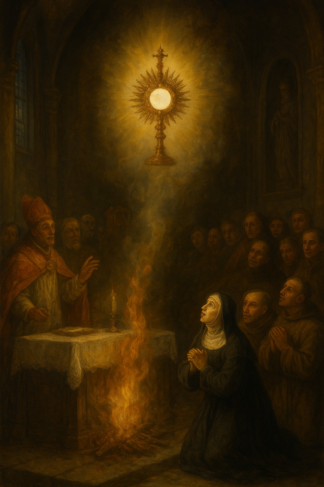
O Milagre Eucarístico de Pressac ocorreu em 1643, na cidade de Pressac, na França. Esse acontecimento é um forte testemunho da presença real de Cristo na Eucaristia, manifestada mesmo em meio à destruição causada pelo fogo.
O milagre aconteceu em uma Quinta-feira Santa. Após a celebração da Missa, o sacerdote colocou o cálice contendo a Hóstia consagrada em um repositório dentro da igreja paroquial. Algumas horas depois, um incêndio de grandes proporções atingiu o templo, destruindo quase tudo.
Quando o fogo cessou e os fiéis entraram no local, encontraram o cálice praticamente derretido pelo calor intenso. No entanto, de maneira inexplicável, a Hóstia consagrada permaneceu intacta, protegida por uma pequena bolha formada na base do cálice que não se fundiu.
“Apesar da violência das chamas que destruíram a igreja, a Sagrada Hóstia permaneceu preservada, sem ser consumida pelo fogo.”
Desenvolvimento histórico
- O vigário da paróquia, Simon Sauvage, apresentou o cálice derretido e a Hóstia intacta aos fiéis como sinal do acontecimento extraordinário.
- No dia seguinte, Sexta-feira Santa, a Hóstia foi consumida reverentemente durante a liturgia.
- O caso foi documentado e levado ao Bispo de Poitiers, que reconheceu oficialmente o evento.
- Vitrais na Igreja de São Justo, em Pressac, representam até hoje as fases do milagre.
Significado espiritual
O milagre de Pressac destaca verdades centrais da fé católica:
- A presença real de Cristo — nem mesmo o fogo foi capaz de destruir a Eucaristia, sinal de que ela não é simples pão.
- A proteção divina — Deus manifesta Seu poder preservando o Santíssimo Sacramento em meio à destruição.
Na exposição de Carlo Acutis
O milagre de Pressac integra a Mostra Internacional dos Milagres Eucarísticos, idealizada por São Carlo Acutis. Ele é apresentado como um dos principais milagres eucarísticos ocorridos na França.
Curiosidades
- O cálice ficou quase totalmente destruído, restando apenas a base onde a Hóstia foi preservada.
- Os vitrais históricos da igreja local servem como uma “catequese visual” sobre o milagre.
- O acontecimento reforçou a devoção eucarística na região de Pressac.
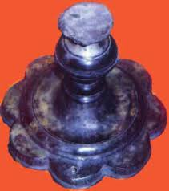
Fontes confiáveis
O Milagre Eucarístico de Les Ulmes ocorreu em 1668, na pequena igreja de Les Ulmes, na França. É um sinal extraordinário da presença real de Cristo na Eucaristia mostrado de forma visível durante a adoração pública do Santíssimo Sacramento.
No dia 2 de junho de 1668, sábado da Oitava de Corpus Christi, o Santíssimo Sacramento estava exposto para adoração. Enquanto o pároco Nicolas Nezan incensava o ostensório e os fiéis cantavam o hino Pange lingua, os presentes viram no lugar da Hóstia consagrada uma imagem de um homem com cabelo castanho claro até os ombros, rosto luminoso, mãos cruzadas e vestindo uma túnica branca.
Essa forma permaneceu visível por cerca de 15 minutos, pois testemunhas relataram ter visto a aparência nitidamente enquanto o hino era cantado e depois também sobre o altar. Posteriormente, o pároco informou o evento ao seu bispo, que ordenou uma investigação e autorizou oficialmente o culto ao milagre.
“A forma luminosa de um homem apareceu no lugar da Hóstia durante a adoração, com rosto brilhante, mãos cruzadas e túnica branca, diante de muitos fiéis.”
Desenvolvimento histórico
- Após a visão, o pároco comunicou o ocorrido ao Bispo de Angers, Henri Arnauld, que imediatamente mandou investigar e publicou um relato fiel do evento.
- Até o final do século XVIII, a comunidade local celebrava anualmente o aniversário do milagre.
- Durante a Revolução Francesa, para evitar a profanação, a Hóstia milagrosa foi devotamente consumida pelo vigário de Puy-Notre-Dame.
- Na igreja ainda pode ser vista a nicho que abrigou a Hóstia milagrosa por mais de 130 anos.
Significado espiritual
Esse milagre reforça duas verdades centrais da fé católica:
- A presença real de Cristo — a Hóstia consagrada não é apenas pão; a aparição visível é interpretada como um sinal divino da presença de Jesus.
- A adoração reverente — a resposta dos fiéis e a autorização eclesiástica mostram a importância da devoção ao Santíssimo Sacramento.
Na exposição de Carlo Acutis
O milagre de Les Ulmes é apresentado na Mostra Internacional dos Milagres Eucarísticos, idealizada por São Carlo Acutis, como um dos eventos significativos ocorridos na França, destacando sinais extraordinários da Eucaristia.
Curiosidades
- O milagre foi testemunhado por cerca de 200 fiéis que se reuniam para adoração.
- O acontecimento foi registrado por dominicanos e outras obras da época, incluindo versões impresas e xilogravuras.
- Após muitos anos de veneração, a memória do milagre ainda é celebrada em eventos e peregrinações locais.

Fontes confiáveis
O Milagre Eucarístico de Dijon aconteceu em 1430, em Dijon, na França. É um sinal extraordinário da presença real de Cristo na Eucaristia manifestado de forma visível e impressionante.
Em 1430, uma senhora em Mônaco comprou um relicário/monstrance de segunda mão que, por descuido, ainda continha a Santa Hóstia consagrada. Ignorando a presença real de Cristo na Eucaristia, ela tentou retirar a Hóstia com uma faca — momento em que começou a fluir sangue vivo da Hóstia.
O sangue secou imediatamente e deixou impresso na Hóstia a imagem do Senhor sentado sobre um trono semicircular, rodeado por alguns instrumentos da Paixão, um sinal visível e duradouro.
“A Hóstia começou a destilar sangue vivo que, ao secar, deixou impressa a imagem do Senhor com os símbolos da Paixão.”
Desenvolvimento histórico
- A mulher perturbada levou a Hóstia ao cônego Anelon, que a conservou com reverência.
- O episódio chegou ao conhecimento do Papa Eugênio IV, que desejou que a Hóstia fosse entregue ao Duque Filipe da Borgonha.
- O Duque, por sua vez, doou a Hóstia à cidade de Dijon, onde foi venerada por mais de 350 anos.
- Em fevereiro de 1794, durante a Revolução Francesa, a Basílica de São Miguel Arcanjo — onde a Hóstia estava — foi confiscada e a Hóstia milagrosa acabou sendo queimada.
Significado espiritual
Esse milagre reforça duas verdades fundamentais da fé católica:
- A presença real — a Hóstia consagrada não era simples pão, mas o Corpo de Cristo, manifestado pelo sangue e pela imagem impressa.
- A reverência e devoção — o prodígio chamou atenção dos fiéis e autoridades eclesiásticas para a grandeza do sacramento.
Na exposição de Carlo Acutis
O milagre de Dijon está incluído na Mostra Internacional dos Milagres Eucarísticos, idealizada por São Carlo Acutis, que apresenta eventos significativos de manifestações eucarísticas ao redor do mundo.
Curiosidades
- Dijon era um importante centro da Borgonha no século XV, e o milagre contribuiu para a devoção e o culto eucarístico na região.
- Vitrais na Catedral de Dijon retratam cenas deste milagre, preservando visualmente a tradição do evento.
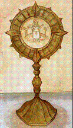
Fontes confiáveis
Durante uma missa, a hóstia começou a sangrar. O bispo do local, Alejo Zavala Castro, convocou uma comissão teológica de investigação para determinar se era uma farsa ou um verdadeiro milagre.
Em outubro de 2009, ele convidou o Dr. Ricardo Castañón Gómez para realizar pesquisas científicas com uma equipe de cientistas e verificar a natureza milagrosa da ocorrência.
Análises científicas
A pesquisa científica realizada entre outubro de 2009 e outubro de 2012 divulgou a seguinte declaração:
- A substância avermelhada analisada corresponde ao sangue no qual há hemoglobina e DNA de origem humana.
- Dois estudos conduzidos por eminentes especialistas forenses mostraram que a substância se origina do interior da hóstia, excluindo a hipótese de fraude.
- O tipo sanguíneo é AB, o mesmo encontrado na Hóstia de Lanciano e no Santo Sudário de Turim.
- Análises microscópicas revelaram que a parte superior do sangue está coagulada desde outubro de 2006, mas camadas internas mostraram sangue fresco em fevereiro de 2010.
“O evento não tem explicação natural. É um sinal visível da presença viva de Cristo na Eucaristia.”
Curiosidades
- O milagre ocorreu na cidade de Tixtla, no México, em 2006.
- As análises foram conduzidas sob supervisão eclesiástica e com rigor científico internacional.
- Foi reconhecido como um dos principais milagres eucarísticos da atualidade e incluído na exposição de São Carlo Acutis.
Fonte: Site sobre a informação
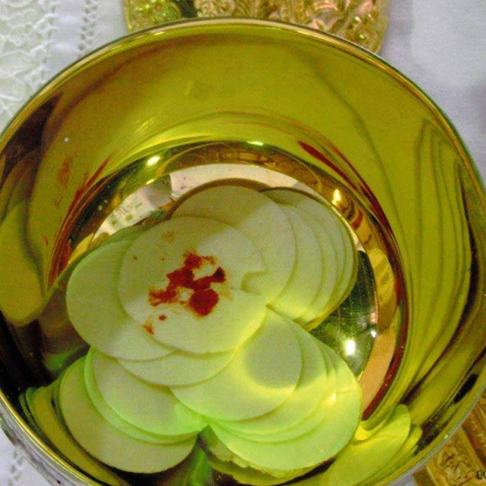
O Milagre Eucarístico de Sokółka aconteceu em 12 de outubro de 2008, na igreja de São Antônio, na cidade de Sokółka, nordeste da Polônia. Este milagre é considerado um dos mais impactantes do século XXI.
O que aconteceu?
Durante a distribuição da Sagrada Comunhão, uma hóstia consagrada caiu no chão. Conforme as normas da Igreja, foi recolhida e colocada em um recipiente com água, para que se dissolvesse. O recipiente foi deixado no sacrário.
Alguns dias depois, ao abrir o recipiente, a Irmã que cuidava da sacristia encontrou a hóstia com uma mancha avermelhada que parecia carne com sangue. O fato foi comunicado imediatamente ao pároco e ao arcebispo da região.
"Era uma parte de tecido humano vivo. E não era apenas um pedaço de carne — era tecido do coração humano em sofrimento extremo!" — conclusão científica.
Análise científica
Dois especialistas da Universidade Médica de Białystok analisaram a hóstia:
- Identificaram que o fragmento era tecido do miocárdio humano, o músculo do coração.
- O tecido apresentava sinais de estar vivo, com células intactas e em sofrimento, como alguém em agonia.
- Não havia indícios de que o tecido tivesse sido adicionado artificialmente à hóstia.
O caso permanece aberto pela Congregação para a Doutrina da Fé, com aprovação do bispo local para a veneração pública.
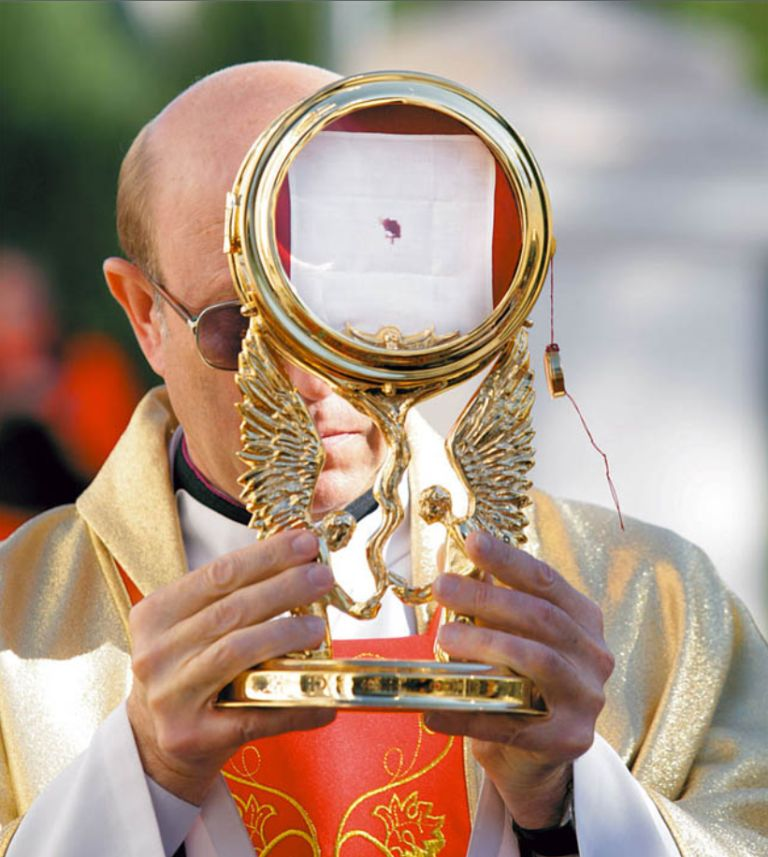
O Milagre Eucarístico de Legnica ocorreu em 25 de dezembro de 2013, na Igreja de São Jacek (Kościół św. Jacka), na cidade de Legnica, região da Baixa Silésia, Polônia. Durante a Santa Missa de Natal, uma hóstia consagrada caiu ao chão durante a distribuição da Comunhão. Seguindo as normas da Igreja, o sacerdote colocou a hóstia em um recipiente com água, para que se dissolvesse antes de ser depositada no sacrário.
O que aconteceu?
Após alguns dias, observou-se que a hóstia não havia se dissolvido completamente. Em vez disso, surgiu uma mancha avermelhada sobre ela. O então bispo da diocese, Dom Stefan Cichy, instituiu uma comissão para investigar o caso. Amostras do fragmento foram enviadas a dois institutos independentes de medicina forense, que concluíram que a substância apresentava características de tecido humano com fibras de músculo cardíaco em estado de agonia.
Em 2016, o novo bispo de Legnica, Dom Zbigniew Kiernikowski, divulgou um comunicado oficial reconhecendo que o evento possui “as características de um milagre eucarístico” e autorizou a exposição pública da hóstia para veneração dos fiéis.
“O Senhor quis nos mostrar que está vivo na Eucaristia. O fragmento é um sinal visível do Mistério da Presença Real de Cristo no Sacramento do Altar.” — Dom Zbigniew Kiernikowski, Bispo de Legnica
Reação da comunidade
O acontecimento despertou grande comoção e renovou a fé na presença real de Cristo na Eucaristia. A hóstia milagrosa foi colocada em um relicário especial e passou a ser venerada na própria Igreja de São Jacek. Desde então, a paróquia recebe peregrinações, horas santas e testemunhos de conversão ligados ao milagre.
Conservação do milagre
- A hóstia permanece exposta para adoração na Igreja de São Jacek, em Legnica.
- A diocese mantém um relatório oficial e acompanhamento pastoral do fenômeno.
- O caso foi encaminhado à Congregação para a Doutrina da Fé, no Vaticano, para avaliação final.
O Milagre de Legnica é um forte apelo à fé na Presença Real de Jesus na Eucaristia e um convite à adoração, à reparação e à renovação espiritual diante do Santíssimo Sacramento.
Fontes:
- Catholic News Agency – “Check out this new Eucharistic miracle in Poland” (2016)
- National Catholic Register – “Polish ‘Eucharistic Miracle’ in Legnica” (2016)
- Diocese de Legnica – Comunicado Oficial (Curia Message, 2016)
- Michael Journal – “Another Eucharistic Miracle in Poland”
- Perpetual Eucharistic Adoration – “Eucharistic Miracle of Legnica”
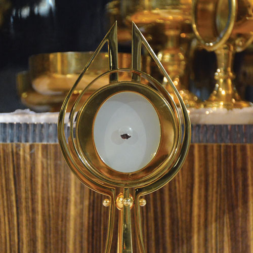
O Milagre Eucarístico de Głotowo ocorreu por volta do ano de 1290, na pequena aldeia de Głotowo, situada na região de Warmia, norte da Polônia. Este fato extraordinário é considerado um dos mais antigos milagres eucarísticos do país e recorda a presença real de Jesus Cristo na Eucaristia.
O que aconteceu?
Durante um período de conflitos e invasões, um sacerdote local escondeu um cibório contendo uma hóstia consagrada para protegê-la de possíveis profanações. A igreja da aldeia foi destruída e, com o tempo, o local onde a Eucaristia havia sido enterrada foi esquecido.
Anos mais tarde, um camponês lavrava a terra quando seus bois pararam e se ajoelharam diante de um ponto luminoso. Intrigado, o homem cavou o solo e encontrou o cibório intacto, com a hóstia branca e incorrupta, irradiando uma luz intensa. O sacerdote local foi chamado e, com grande reverência, levou a Eucaristia de volta à igreja.
“O Senhor quis manifestar-se para confirmar que está realmente presente no Santíssimo Sacramento, mesmo quando os homens O esquecem ou escondem.”
Reação da comunidade
O acontecimento causou profunda comoção entre os fiéis, que passaram a venerar o local como sagrado. Em memória do milagre, foi construída uma igreja dedicada ao Santíssimo Sacramento. Em 1726, o bispo Krzysztof Potocki mandou ampliar o templo medieval, tornando-o um centro de peregrinação.
Conservação do milagre
- O santuário de Głotowo guarda relíquias e recordações ligadas ao milagre eucarístico.
- O local tornou-se ponto de peregrinação e adoração ao Santíssimo Sacramento.
- Os registros históricos e testemunhos preservam a memória do acontecimento desde o século XIII.
O milagre de Głotowo continua a inspirar os fiéis a adorar o Senhor presente na Eucaristia e a reconhecer que Jesus vive e permanece conosco no Santíssimo Sacramento do altar.
Fontes: The Real Presence Eucharistic Education and Adoration Association; Eucharist Jesus With Us.
Em 1345, nos arredores de Cracóvia (na região de Wawel, Polônia), ocorreu um extraordinário milagre eucarístico. Um grupo de ladrões invadiu uma pequena igreja (a Igreja de Todos os Santos próxima a Wawel) e subtraiu um ostensório (ou cibório/monstrância) que continha várias hóstias consagradas. :contentReference[oaicite:4]{index=4}
O que aconteceu?
Os ladrões, após perceberem que o ostensório não era de ouro maciço e não continha riquezas visíveis, descartaram-no com as hóstias consagradas numa zona pantanosa e lamacenta fora da vila. Curiosamente, em seguida, aquelas hóstias passaram a emitir uma luz incomum, visível no escuro, como faíscas ou clarões nas águas turvas do pântano. :contentReference[oaicite:5]{index=5}
O rei polonês Casimiro III, o Grande (Kazimierz III) tomou conhecimento e ordenou a construção de uma igreja dedicada ao Santíssimo Sacramento para marcar o acontecimento: a Basílica de Corpus Christi (Cracóvia) foi erguida em honra ao milagre. :contentReference[oaicite:8]{index=8}
“As hóstias consagradas revelaram-se como luz viva no pântano, clamando no silêncio da noite: «Eis que Eu permaneço convosco».”
Reação da comunidade e significado
O episódio suscitou uma profunda devoção eucarística: os fiéis, o clero e o monarca entenderam-no como um sinal visível da presença real de Jesus Cristo na Eucaristia. A construção da igreja e a preservação de documentos, pinturas e testemunhos reforçaram o caráter público deste milagre. :contentReference[oaicite:10]{index=10}
Conservação e memória
- Documentos históricos eclesiásticos registram o depoimento de testemunhas sobre o fenômeno da luz no pântano. :contentReference[oaicite:11]{index=11}
- A basílica construída por ordem do rei mantém painéis e pinturas que representam o milagre. :contentReference[oaicite:12]{index=12}
- A devoção e a festa da Corpo e Sangue de Cristo assumiram nova força na região, destacando o valor da Eucaristia como mistério vivo. :contentReference[oaicite:14]{index=14}
Reflexão para os fiéis
Este milagre recorda que a Eucaristia não é apenas símbolo, mas presença real de Cristo entre nós. Ele desafia a nossa fé, convoca à reverência, à adoração e ao agradecimento. Em particular, nos inspira a contemplar que, mesmo “escondido” ou “mal tratado”, o Corpo de Cristo pode manifestar-se de modo visível — e nos chama a reconhecer-Lhe o devido lugar de honra.

Hóstia se transformou em carne com células do miocárdio humano. O estudo foi conduzido sob autorização do então bispo Jorge Bergoglio (Papa Francisco).
O Milagre Eucarístico de Buenos Aires é um dos milagres mais recentes e reconhecidos pela Igreja, ocorrido na Argentina em 1996, na paróquia de Santa Maria, bairro Almagro.
Após uma missa, uma hóstia consagrada foi esquecida em um candelabro. Quando recolhida, foi colocada em água para se dissolver, mas não se dissolveu e começou a apresentar uma mancha vermelha semelhante a carne com sangue.
O então arcebispo Jorge Mario Bergoglio(Papa Francisco), autorizou que o fenômeno fosse documentado e acompanhado, mantendo silêncio inicial.
“Na Eucaristia, está presente aquele mesmo Jesus que viveu, sofreu e morreu por nós, com o mesmo coração humano que ainda hoje ama e sofre conosco.”
Análises científicas
Em 1999, cientistas americanos, sem saber a origem da amostra, analisaram o tecido:
- Tecido do miocárdio humano (parte do coração responsável pela contração para bombear sangue).
- Tecido estava vivo no momento da coleta, apresentando glóbulos brancos intactos.
- DNA humano, sem sinais de decomposição natural.
O resultado foi surpreendente e considerado inexplicável do ponto de vista científico, reforçando a fé na presença real de Jesus na Eucaristia.
Curiosidades
- O milagre foi incluído na exposição mundial dos Milagres Eucarísticos organizada por São Carlo Acutis.
- Papa Francisco acompanhou o caso como arcebispo, mantendo respeito e silêncio.
História do Milagre
Em 1297, durante uma missa na igreja do antigo mosteiro beneditino de São Daniel, em Gerona, um sacerdote duvidou da presença real de Cristo na Eucaristia. Ao comungar, a hóstia se transformou em carne, o que o impediu de engolir. O sacerdote, atônito, colocou a partícula transformada em carne sobre o corporal e a deixou no altar. Após a missa, uma monja encontrou o corporal com a carne ensanguentada. A relíquia foi colocada em um relicário e permaneceu na igreja até ser destruída durante a Guerra Civil Espanhola em 1936.
“Na Eucaristia, está presente aquele mesmo Jesus que viveu, sofreu e morreu por nós, com o mesmo coração humano que ainda hoje ama e sofre conosco.”
Imagem do Milagre

Vídeo Explicativo
História do Milagre
O Milagre Eucarístico de Guadalupe aconteceu por volta do ano de 1420, no Santuário de Nossa Senhora de Guadalupe, na região de Toledo, na Espanha. É um testemunho profundo da presença real de Cristo na Eucaristia.
Relato do Milagre
O sacerdote Dom Pedro Cabañuelas, um homem de grande devoção ao Santíssimo Sacramento, sofria com dúvidas sobre a real transubstanciação.
No momento da consagração, ele viu descender uma nuvem densa que cobriu parcialmente o altar.
Aos poucos a nuvem se dissipou, e então surgiu a visão: a Hóstia estava suspensa sobre o cálice, e dela brotavam abundantes gotas de Sangue.
Essas gotas encheram rapidamente o cálice e transbordaram, derramando sobre o corporal e sobre a pala (pequeno tecido quadrado rígido usado para cobrir o cálice).
Durante a visão, o sacerdote ouviu uma voz que dizia: “End the Holy Mass, and for the moment reveal to no one what you saw.(Encerre a Santa Missa e, por ora, não revele a ninguém o que você viu.)”
Desenvolvimento Histórico
- Há numerosos documentos antigos que testificam o milagre.
- As relíquias do corporal ensanguentado e da pala manchado permanecem veneradas no Santuário de Guadalupe.
- No Congresso Eucarístico de Toledo, em 1926, essas relíquias foram expostas para veneração pública.
- O milagre se difundiu por toda a Espanha, e o Rei Don Juan II de Castela e a Rainha Maria de Aragão se tornaram grandes devotos.
Significado Espiritual
Esse prodígio é uma confirmação visível da transubstanciação: a transformação real do pão e do vinho no Corpo e Sangue de Cristo. Além disso, é um convite à humildade e à fé: mesmo com dúvidas, Dom Pedro orou e recebeu um sinal extraordinário de Deus.
No Legado de Carlo Acutis
Este milagre faz parte da Mostra Internacional de Milagres Eucarísticos, idealizada por São Carlo Acutis, e está presente no catálogo oficial do site: https://www.miracolieucaristici.org/pr/Liste/list.html
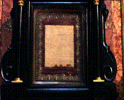
Fontes Confiáveis
História do Milagre
O Milagre Eucarístico de Saragoça aconteceu em cerca de 1427, na cidade de Saragoça (Zaragoza), Espanha. Segundo os documentos históricos, esse prodígio ocorreu quando uma mulher roubou uma Hóstia consagrada, com intenções supersticiosas, desencadeando um sinal sobrenatural que reforçou a fé na presença real de Cristo na Eucaristia. :contentReference[oaicite:0]{index=0}
Relato do Milagre
Uma mulher casada, perturbada por dificuldades em seu casamento, procurou um feiticeiro para obter ajuda. O mago instruiu-a a roubar uma Hóstia consagrada da igreja — para usá-la em um filtro de amor.
A mulher, que era muito supersticiosa, foi à igreja de São Miguel, confessou-se e comungou, mas com astúcia diabólica, tirou a Hóstia da boca, colocou-a num cofrinho e levou-a à casa do mago. Quando a mulher abriu a caixa, para sua surpresa, encontrou dentro uma pequena criança — em vez da Hóstia — cercada por luz.
Aterrorizada, ela correu para queimar a caixa com a criança dentro, segundo a orientação do feiticeiro, mas, apesar do fogo consumir completamente a caixa, a criança permaneceu ilesa.
Este bebê foi identificado como o Menino Jesus. Relatos da época mencionam que a pintura dessa cena ainda está presente na Capela de São Dominguito do Val, na Catedral de Saragoça, e uma placa memorial descreve o milagre no local.
Desenvolvimento Histórico
- Existe um registro antigo na Câmara Municipal de Saragoça, com o relato detalhado do milagre.
- Uma pintura histórica na Catedral da Seo de Saragoça retrata o fato miraculosamente.
- Na Capela de S. Dominguito del Val, há uma placa que descreve o evento milagroso para os fiéis.
- O milagre reforçou a devoção e a fé eucarística na região, sendo preservado em documentos e arte sacra ao longo dos séculos.
Significado Espiritual
Esse milagre tem um significado profundo: demonstra a presença real de Cristo na Eucaristia, mesmo quando atos humanos (como roubo ou superstição) tentam profanar o sacramento. A manifestação de Jesus como Menino também simboliza sua humildade e encarnação, e convida os fiéis a reconhecer a santidade e o poder da Hóstia consagrada.
No Legado de Carlo Acutis
Esse milagre está incluído no catálogo da Mostra Internacional de Milagres Eucarísticos, idealizada por São Carlo Acutis. Seu site oficial reúne relatos, artes e documentos desses prodígios para inspirar a fé.
Fontes Confiáveis
História do Milagre
O Milagre Eucarístico de Ivorra ocorreu por volta do ano de 1010, na vila de Ivorra, localizada na Catalunha (Espanha). Este milagre é um testemunho marcante da presença real de Cristo no Santíssimo Sacramento, ocorrido em um momento de dúvida do sacerdote celebrante.
Durante a celebração da Santa Missa, o sacerdote Bernat Oliver começou a duvidar da presença real de Jesus no vinho consagrado. No momento da consagração, o vinho transformou-se visivelmente em Sangue, que se derramou do cálice sobre o corporal, o altar e chegou até o chão.
O acontecimento foi imediatamente comunicado às autoridades eclesiásticas. O bispo de Urgell, São Ermengaudio, levou o relato ao Papa Sérgio IV, que reconheceu oficialmente o milagre como um sinal extraordinário da Eucaristia.
“O vinho consagrado transformou-se em Sangue de forma visível, confirmando a fé da Igreja na presença real de Cristo na Eucaristia.”
Desenvolvimento histórico
- As relíquias do milagre, incluindo o corporal manchado com Sangue, são conservadas até hoje em um relicário gótico do século XV na igreja paroquial de Ivorra.
- O milagre contribuiu para o fortalecimento da devoção eucarística na região da Catalunha ao longo dos séculos.
- A autenticidade do acontecimento foi confirmada pela autoridade papal e preservada pela tradição da Igreja.
Significado espiritual
O milagre de Ivorra reforça a doutrina da transubstanciação, ensinando que o vinho consagrado torna-se verdadeiramente o Sangue de Cristo. Ele convida os fiéis a confiarem plenamente no mistério da Eucaristia, mesmo diante das dúvidas humanas.
Na exposição de Carlo Acutis
O Milagre Eucarístico de Ivorra faz parte da Mostra Internacional dos Milagres Eucarísticos, idealizada por Carlo Acutis, que utilizou a tecnologia para catalogar e divulgar milagres eucarísticos reconhecidos pela Igreja em todo o mundo.
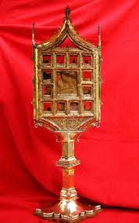
Fontes confiáveis
História do Milagre
O Milagre Eucarístico de Silla ocorreu em 1907, na cidade de Silla, na região de Valência (Espanha). Este acontecimento está ligado à conservação extraordinária das hóstias consagradas e é reconhecido como um sinal da presença real de Cristo na Eucaristia.
No dia 25 de março de 1907, durante a celebração da Festa da Anunciação, o pároco da igreja de Nossa Senhora dos Anjos percebeu que o tabernáculo estava aberto e que o cibório contendo as hóstias consagradas havia sido roubado. O fato causou grande comoção entre os fiéis.
Dois dias depois, as hóstias consagradas foram encontradas intactas, escondidas sob uma pedra em uma horta fora da cidade. Apesar de terem permanecido expostas ao ambiente, não apresentavam sinais de corrupção ou deterioração. As partículas foram recolhidas com grande reverência e levadas de volta à igreja em procissão solene.
“As hóstias permaneceram incorruptas, conservando-se no mesmo estado em que foram encontradas, fato considerado extraordinário pela autoridade eclesiástica.”
Desenvolvimento histórico
- As hóstias do milagre foram preservadas em um relicário próprio na igreja de Nossa Senhora dos Anjos, em Silla.
- Em 1934, o Arcebispo de Valência confirmou oficialmente a autenticidade do acontecimento e autorizou sua veneração.
- Desde então, o milagre tornou-se motivo de adoração eucarística e devoção para os fiéis da região.
Significado espiritual
O Milagre Eucarístico de Silla recorda aos fiéis o respeito e a reverência devidos ao Santíssimo Sacramento. A conservação inexplicável das hóstias reforça a fé na presença real de Cristo na Eucaristia e convida à adoração, reparação e amor ao Sacramento do Altar.
Na exposição de Carlo Acutis
Este milagre está incluído na Mostra Internacional dos Milagres Eucarísticos, idealizada por Carlo Acutis, que reuniu e organizou milagres eucarísticos reconhecidos pela Igreja para ajudar os fiéis a redescobrirem a centralidade da Eucaristia na vida cristã.
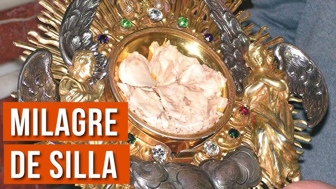
Fontes confiáveis
História do Milagre
O Milagre Eucarístico de Chirattakonam ocorreu em 28 de abril de 2001, na Igreja de Santa Maria (St. Mary’s Church), em Chirattakonam, Trivandrum, Kerala, Índia. Durante a adoração ao Santíssimo, os fiéis testemunharam na hóstia consagrada a manifestação visível do Rosto de Jesus, coroado de espinhos.
O que aconteceu?
Na exposição do Santíssimo Sacramento, alguns presentes perceberam primeiro três pontos na hóstia. Em seguida, formou-se nitidamente a imagem de um Rosto humano, identificada como a face de Jesus na Paixão. O fenômeno permaneceu visível por um período significativo, gerando grande comoção e devoção.
“O Senhor nos recorda, na Eucaristia, que é realmente Deus conosco: sofre por nós, permanece por nós, vive por nós.”
Reação da comunidade
O pároco e os fiéis organizaram momentos de oração e adoração. A arquidiocese conduziu averiguações pastorais, colheu testemunhos e constatou a ausência de manipulação humana. O acontecimento foi acolhido como sinal extraordinário que fortalece a fé na Presença Real de Cristo.
Conservação do milagre
- O fato é recordado na paróquia de Chirattakonam, com intensa veneração eucarística.
- O santuário recebe peregrinações e horas santas em ação de graças.
- Relatos e registros paroquiais preservam a memória do ocorrido.
O milagre de Chirattakonam inspira os fiéis a renovar a adoração eucarística e a contemplar o mistério do amor de Cristo que se entrega por nós na Santa Missa.
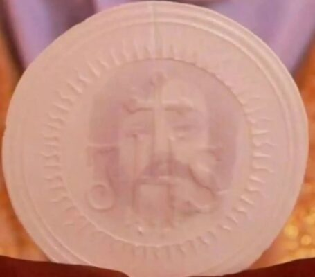
História do Milagre
O Milagre Eucarístico de Herentals ocorreu no ano de 1412, na cidade de Herentals, na Bélgica, e é um dos casos apresentados na Mostra Internacional de Milagres Eucarísticos, idealizada por São Carlo Acutis.
Relato do Milagre
Algumas Hóstias consagradas foram furtadas de uma igreja local por um homem que roubava objetos sagrados.
Depois de vários dias — especificamente por volta de oito dias — as Hóstias foram encontradas perfeitamente intactas, apesar da chuva e das condições externas.
As Hóstias estavam numa campo próximo a uma toca de coelhos, cercadas por uma luz brilhante e dispostas em forma de cruz.
“Mesmo abandonadas e expostas às intempéries, as Hóstias consagradas permaneceram intactas e resplandecentes, recordando aos fiéis que a Eucaristia é verdadeiramente a presença viva de Cristo entre nós.”
Desenvolvimento Histórico
- As Hóstias encontradas foram levadas em procissão até Herentals e até a igreja de Poederlee, onde permaneceram durante muitos anos.
- No local em que as Hóstias foram achadas foi construída uma pequena capela, conhecida como De Hegge, que passou a ser lugar de devoção.
- Anualmente, pinturas que representam o milagre são levadas em procissão ao campo e ali celebrada uma Missa em memória do acontecimento.
Significado Espiritual
Este evento é apresentado como um sinal extraordinário da presença real de Cristo na Eucaristia, mostrando que as Hóstias consagradas permaneceram intactas em condições em que normalmente se deteriorariam — e mesmo assim emitiram um brilho singular, reforçando a fé dos fiéis na Eucaristia
No Legado de Carlo Acutis
O milagre de Herentals está incluído no catálogo oficial de milagres eucarísticos documentados e traduzidos no site de Carlo Acutis como parte da exposição mundial que reúne episódios reconhecidos historicamente.
Fontes Confiáveis
O Milagre Eucarístico de Bruxelas aconteceu em 1370, na Bélgica, e é um dos milagres eucarísticos mais conhecidos da Europa. O caso marcou profundamente a fé do povo belga e permanece lembrado até hoje.
Na época, algumas hóstias consagradas foram roubadas de uma igreja em Bruxelas. Elas foram levadas a pessoas que pretendiam profaná-las e, ao serem feridas com facas, começaram a derramar sangue de forma inexplicável. Esse acontecimento foi interpretado como um sinal visível da presença real de Cristo na Eucaristia.
“A Eucaristia é o coração vivo da Igreja, onde Cristo se faz presente real e verdadeiramente.”
Consequências
O milagre trouxe grande comoção e rapidamente foi reconhecido pelas autoridades da época como um sinal divino. Em memória, as relíquias foram guardadas na atual Catedral de São Miguel e Santa Gudula, em Bruxelas. Todos os anos, passou a ser realizada uma procissão solene para recordar o milagre.
Curiosidades
- É um dos milagres eucarísticos incluídos na exposição mundial organizada por São Carlo Acutis.
- A Igreja hoje ressalta apenas o aspecto eucarístico do milagre, sem alimentar preconceitos religiosos.
- A Catedral de Bruxelas permanece até hoje como local de veneração e memória desse acontecimento.

O Milagre Eucarístico de Seefeld aconteceu em 1384, na Áustria, e é um dos milagres eucarísticos mais conhecidos da região alpina. O acontecimento reforçou a fé do povo local e transformou Seefeld em um centro de peregrinação.
Segundo a tradição, um nobre chamado Oswald Milser, cheio de orgulho, exigiu receber uma hóstia grande, igual à usada pelo padre na Missa. No momento da Comunhão, ao tentar consumir a Eucaristia de forma arrogante, o chão da igreja se abriu sob seus pés. Ele ficou preso e caiu de joelhos, reconhecendo seu pecado e pedindo perdão. A hóstia permaneceu intacta, confirmando o poder da presença real de Cristo na Eucaristia.
“Quem se aproxima da Eucaristia deve fazê-lo com humildade e fé, pois nela está o próprio Cristo vivo.”
Consequências
O milagre impressionou profundamente a comunidade local. Em memória, foi construída a Igreja da Santíssima Trindade, que se tornou local de peregrinação. Até hoje, Seefeld é conhecido por esse acontecimento e recebe fiéis que desejam venerar o lugar do milagre.
Curiosidades
- O milagre é lembrado todos os anos com celebrações solenes em Seefeld.
- A hóstia milagrosa foi preservada como sinal da presença real de Cristo.
- Também foi incluído na exposição mundial dos Milagres Eucarísticos organizada por São Carlo Acutis.
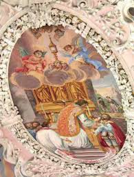
O Milagre Eucarístico de Fiecht ocorreu no século XIV, na Áustria, no antigo mosteiro cisterciense de Fiecht, localizado na região do Tirol. Esse acontecimento tornou-se um dos mais importantes milagres eucarísticos da região, contribuindo para o fortalecimento da fé católica e da devoção à Santíssima Eucaristia entre monges, sacerdotes e fiéis leigos.
Segundo a tradição, durante a celebração da Santa Missa, um sacerdote que atravessava um período de crise espiritual começou a nutrir dúvidas interiores sobre a presença real de Cristo na Eucaristia. Imediatamente depois da consagração o vinho se transformou em Sangue e começou a borbulhar e a sair do Cálice. Em 1480, 170 anos depois, o Santo Sangue ainda estava “fresco como se tivesse saído hoje de uma ferida”, escrevia um cronista da época. O Sangue continua intacto e está guardado num Relicário no Mosteiro de São Georgenberg.
O Abade, os monges, que estavam no coro, e os numerosos peregrinos que participavam da missa, se aproximaram do Altar e viram o que tinha acontecido. O sacerdote assustado, não conseguiu beber todo o Santo Sangue, assim o Abade colocou o que restou num recipiente perto do purificador que secava o Cálice dentro do Tabernáculo do Altar Maior.
“A Eucaristia é o maior tesouro da Igreja, pois nela Cristo se entrega totalmente por amor.”
Consequências
O milagre teve grande repercussão espiritual na comunidade local e além dela. O Mosteiro de Fiecht tornou-se um importante centro de peregrinação, atraindo fiéis que desejavam aprofundar sua fé na presença real de Cristo na Eucaristia. A devoção eucarística se intensificou, e o acontecimento passou a ser lembrado como um chamado à humildade, à reverência e à confiança no mistério da fé.
Ao longo dos séculos, o Milagre de Fiecht foi preservado na memória da Igreja como um sinal concreto da misericórdia divina, que se manifesta mesmo diante das fraquezas humanas, convidando todos à conversão e à adoração sincera.
Curiosidades
- O milagre aconteceu em um mosteiro da Ordem Cisterciense, conhecido pela vida austera, oração constante e profundo amor à liturgia.
- O episódio é frequentemente citado em estudos sobre milagres eucarísticos ocorridos na Europa medieval.
- O Milagre Eucarístico de Fiecht integra a exposição internacional dos Milagres Eucarísticos organizada por São Carlo Acutis.
- Até hoje, o local é lembrado como um símbolo de fé, penitência e adoração eucarística.

Durante a celebração da Missa da Imaculada Conceição, em 8 de dezembro de 1991, na Fazenda Betânia, em Cúa – Venezuela, uma hóstia consagrada começou a exsudar um líquido vermelho semelhante a sangue. O fato ocorreu diante do padre Otty Ossa Aristizábal e de vários fiéis presentes.
O Milagre Eucarístico de Betânia é um dos mais impressionantes reconhecidos pela Igreja, e a hóstia permanece até hoje preservada e exposta para veneração no convento das Irmãs Agostinianas Recoletas do Coração de Jesus, em Los Teques.
O fenômeno ganhou notoriedade porque a hóstia, além de apresentar sangue, foi vista pulsando como um coração vivo, testemunho que marcou profundamente os fiéis que presenciaram o acontecimento.
“Na Eucaristia, está presente aquele mesmo Jesus que se oferece vivo por nós, com um coração que pulsa de amor pela humanidade.”
Análises científicas
Estudos realizados posteriormente confirmaram que se tratava de sangue humano. Entre os resultados apontados:
- Sangue humano verdadeiro, não proveniente do sacerdote celebrante.
- Manutenção inexplicável da integridade da hóstia com o passar do tempo.
- Registro em vídeo (1998) mostrando a hóstia pulsando como um coração.
Os resultados foram considerados cientificamente inexplicáveis, reforçando a fé dos católicos na presença real de Jesus na Eucaristia.
Curiosidades
- Este milagre é amplamente venerado e visitado por peregrinos na Venezuela.
- Foi incluído na exposição mundial dos Milagres Eucarísticos organizada por São Carlo Acutis.
- É considerado um dos sinais eucarísticos mais marcantes do continente americano.
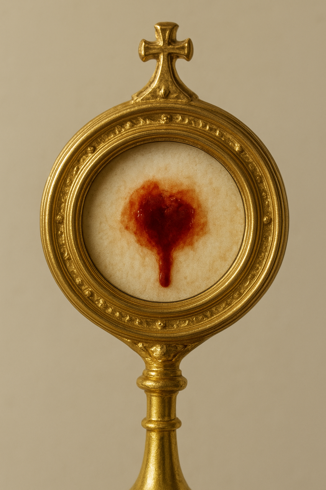
História do Milagre
O Milagre Eucarístico de Tumaco ocorreu em 31 de janeiro de 1906, na pequena ilha de Tumaco, localizada na costa do Oceano Pacífico, na Colômbia. Este acontecimento é lembrado como um momento extraordinário de fé da população e está documentado no catálogo de milagres eucarísticos de Carlo Acutis.
Relato do Milagre
Na manhã daquele dia, um forte terremoto submarino sacudiu a região por cerca de dez minutos, gerando um enorme tsunami que avançava rapidamente em direção à ilha e ameaçava inundar e destruir Tumaco.
Assustados, os habitantes correram para a igreja e imploraram ao pároco, Padre Gerardo Larrondo, e ao seu assistente, Padre Julián, que saíssem em procissão com o Santíssimo Sacramento para implorar a Deus proteção contra a onda que se aproximava.
O padre consumiu todas as hóstias consagradas, deixando apenas a Magna Hóstia, que foi colocada na custódia (ostensório). A multidão seguiu em procissão até a beira-mar, onde o padre ergueu a Hóstia consagrada e, com grande fé, traçou o sinal da cruz sobre a imensa parede de água.
Milagre e Reação
Para espanto de todos, a gigantesca onda que ameaçava engolir a ilha subitamente parou e retrocedeu, e o mar retornou ao seu estado normal — permitindo que a população fosse salva da destruição. Muitas pessoas ali presentes exclamaram: “¡Milagro! ¡Milagro!” (Milagre! Milagre!).
Desenvolvimento Histórico
- O episódio ficou conhecido localmente como o “milagre da onda” e é comemorado todos os anos em Tumaco com procissões, adoração e ações de graças.
- O milagre é lembrado de forma especial na comunidade como um sinal de fé e da presença de Deus no Santíssimo Sacramento.
Significado Espiritual
Este acontecimento é interpretado pelos fiéis como uma intervenção divina em resposta à fé coletiva da população, através da presença real de Cristo na Eucaristia. A parada do tsunami diante da Hóstia consagrada reforça a confiança dos católicos na proteção de Deus em meio às maiores tribulações.
No Legado de Carlo Acutis
O milagre de Tumaco faz parte da Mostra Internacional de Milagres Eucarísticos, organizada por São Carlo Acutis, e está incluído no catálogo oficial de milagres documentados no site de milagres eucarísticos.
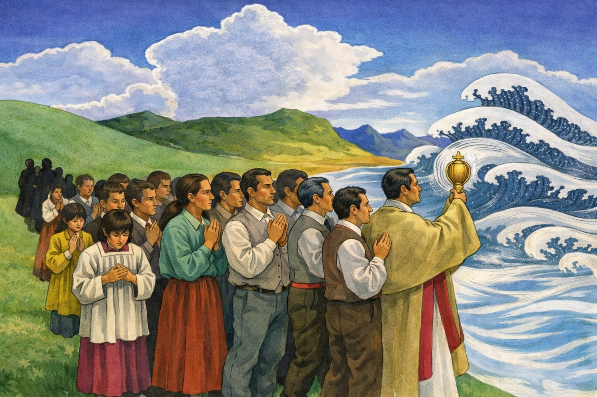
Fontes Confiáveis
O Milagre Eucarístico de Regensburg ocorreu em 25 de março de 1255, na cidade de Regensburg (Ratisbona), Alemanha. Durante a Missa, um sacerdote começou a duvidar da presença real de Cristo na Eucaristia.
Quando ele elevou a Hóstia, um crucifixo de madeira acima do altar se moveu, estendeu os braços e tomou o cálice das mãos do sacerdote, mostrando a Hóstia consagrada para todos os fiéis presentes.
O crucifixo milagroso é preservado até hoje, e uma procissão anual acontece em 14 de setembro em honra ao milagre. Este evento reforçou a fé e a devoção à Eucaristia na Alemanha medieval.
O Milagre Eucarístico de Erding aconteceu em 1417, na cidade de Erding, no sul da Alemanha. Esse evento é considerado um sinal visível da presença real de Cristo na Eucaristia e da reverência que se deve ter ao Santíssimo Sacramento.
Na Quinta-feira Santa de 1417, um camponês pobre, ignorante sobre o significado profundo da Eucaristia, procurou levar para casa a Hóstia consagrada depois de recebê-la na Missa, acreditando equivocadamente que isso poderia lhe trazer prosperidade. No caminho, a Hóstia escapou de suas mãos e voou pelo ar, desaparecendo da sua vista.
O homem, cheio de medo e arrependimento, correu para avisar o sacerdote. Quando o sacerdote chegou ao local onde a Hóstia havia sumido, encontrou-na repousando sobre um pequeno monte de terra, emanando uma luz brilhante. Ao tentar recolhê-la, a Hóstia mais uma vez se levantou no ar. Tanto ele quanto o bispo foram testemunhas desse fenômeno.
“A Hóstia consagrada escapou das mãos, voou pelo ar e só pôde ser recuperada depois da intervenção do bispo, tornando-se objeto de veneração.”
Desenvolvimento histórico
- Após o episódio, o bispo ordenou que se construísse uma pequena capela no local onde a Hóstia havia sido encontrada.
- A devoção ao Milagre cresceu, e curas e acontecimentos extraordinários começaram a ser atribuídos à veneração da Hóstia consagrada.
- Em 1677, um novo e maior santuário em estilo barroco, dedicado ao Preciosíssimo Sangue, foi abençoado pelo bispo Kaspar Kunner de Freising para acolher os peregrinos.
- O santuário continuou sendo centro de peregrinação por séculos, preservando viva a memória do milagre.
Significado espiritual
Esse milagre destaca verdades profundas da fé católica:
- A presença real de Cristo — a Eucaristia não é um mero símbolo, mas o Corpo de Cristo presente de forma real e sagrada.
- A reverência e o respeito — o episódio lembra que o Santíssimo Sacramento deve ser tratado com a maior reverência e cuidado.
Na exposição de Carlo Acutis
O Milagre de Erding está incluído na Mostra Internacional dos Milagres Eucarísticos, idealizada por São Carlo Acutis, que apresenta eventos significativos ocorridos ao longo da história e que reforçam a fé na presença real de Cristo na Eucaristia.
Curiosidades
- Erding fica no estado da Baviera, uma região tradicionalmente católica da Alemanha.
- O santuário construído em honra ao milagre passou por diferentes fases arquitetônicas ao longo dos séculos.
- A história do milagre inspirou peregrinações e devoções locais por muitos anos depois de 1417.
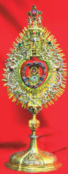
Fontes confiáveis
O Milagre Eucarístico de Amsterdã aconteceu em 1345 e é considerado um dos mais significativos da história da Igreja. Ele revela, de maneira extraordinária, a presença real de Jesus na Eucaristia, preservada milagrosamente do fogo.
Um homem doente, chamado Ysbrand Dommer, recebeu a Comunhão em sua casa. Logo após comungar, ele vomitou a hóstia consagrada. Segundo o costume da época, a empregada lançou o conteúdo na lareira acesa.
Na manhã seguinte, algo surpreendente aconteceu: a hóstia estava intacta entre as cinzas, sem nenhum dano e rodeada por uma luz. O sacerdote recolheu a hóstia, mas ela misteriosamente reapareceu duas vezes na casa do enfermo, reforçando o sinal de que ali havia algo sobrenatural.
“O bispo Jan van Arkel reconheceu oficialmente o milagre, e a casa onde o acontecimento ocorreu tornou-se um lugar de peregrinação.”
O que aconteceu depois
- A casa de Ysbrand Dommer foi transformada na capela chamada Heilige Stede (“Lugar Sagrado”), visitada por inúmeros peregrinos.
- Em 1452, um grande incêndio destruiu parte da cidade, mas a custódia com a hóstia milagrosa permaneceu intacta.
- Durante o período protestante, procissões foram proibidas, mas a devoção permaneceu viva graças à Stille Omgang — a “caminhada silenciosa” — tradição que continua até hoje.
Significado espiritual
O Milagre de Amsterdã testemunha que Cristo permanece realmente presente na Eucaristia. A hóstia que resistiu ao fogo é vista como um convite à fé, reverência e adoração ao Corpo de Cristo.
- A Stille Omgang simboliza humildade e fidelidade, especialmente em tempos de perseguição.
- O milagre reforça a verdade central da fé católica: Jesus está vivo e presente no Santíssimo Sacramento.
Na exposição de Carlo Acutis
O Milagre de Amsterdã está incluído na Mostra Internacional dos Milagres Eucarísticos, organizada por São Carlo Acutis, que reuniu relatos e documentos históricos de milagres reconhecidos pela Igreja ao redor do mundo.
Curiosidades
- A capela erguida no local do milagre tornou-se um dos mais importantes pontos de peregrinação medieval dos Países Baixos.
- A “caminhada silenciosa” foi oficialmente retomada em 1881 e reúne milhares de fiéis todos os anos.
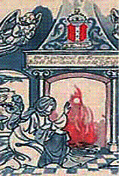
Fontes confiáveis
- The Real Presence – Relato histórico completo: therealpresence.org
- Exposição de Carlo Acutis – Milagres da Holanda: miracolieucaristici.org
- PDF oficial da exposição (Carlo Acutis): amsterdam.pdf
- Artigo histórico sobre a devoção e a Stille Omgang: homeofthemother.org
Em Alkmaar, Holanda, ocorreu um milagre eucarístico em 1º de maio de 1429, que reforça vivamente a fé na presença real de Cristo no Santíssimo Sacramento.
O padre Folkert, celebrando sua primeira Missa na Catedral de São Lourenço, derramou acidentalmente vinho consagrado sobre sua casula (vestimenta litúrgica). Para surpresa de todos, as três gotas que caíram se transformaram em sangue vivo. :contentReference[oaicite:0]{index=0}
Aflito, ele recortou a parte manchada da casula e tentou queimá-la, mas o fogo não consumiu o tecido. Depois, costurou de volta — e, mesmo assim, as manchas de sangue reapareceram como um sinal sobrenatural. :contentReference[oaicite:1]{index=1}
“Em 1433, após várias investigações canônicas, o bispo de Utrecht declarou oficialmente o evento como milagre e autorizou a veneração da relíquia.” :contentReference[oaicite:2]{index=2}
Desenvolvimento histórico
- A peça da casula manchada foi enterrada inicialmente por medo ou insegurança. :contentReference[oaicite:3]{index=3}
- Anos depois, um capitão de navio, em meio a uma terrível tempestade, viu um anjo que lhe mostrou a relíquia e pediu que ele a levasse até Alkmaar. :contentReference[oaicite:4]{index=4}
- Seguindo a instrução angelical, o capitão levou a relíquia de volta à igreja, onde foi resgatada intacta. :contentReference[oaicite:5]{index=5}
- A relíquia hoje está guardada em um relicário em forma de anjo na Catedral de São Lourenço, para veneração dos fiéis. :contentReference[oaicite:6]{index=6}
Significado espiritual
Esse milagre é um forte testemunho da **transubstanciação**, mostrando que o vinho consagrado realmente pode manifestar-se como sangue vivo quando consagrado. :contentReference[oaicite:7]{index=7}
Também ensina humildade e reverência, já que o padre, assustado com o que aconteceu, tentou esconder a relíquia até que a Igreja pudesse observar e discernir o milagre. :contentReference[oaicite:8]{index=8}
Veneração e memória
- O milagre foi oficialmente reconhecido pelo bispo de Utrecht em 1433. :contentReference[oaicite:9]{index=9}
- A relíquia permanece até hoje na Catedral de São Lourenço, envolta em devoção. :contentReference[oaicite:10]{index=10}
- O caso é citado em compilações de milagres eucarísticos, sendo lembrado como um dos símbolos da real presença de Cristo na Eucaristia. :contentReference[oaicite:11]{index=11}
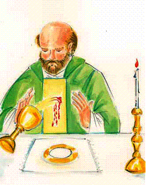
Fontes confiáveis
- EucharisticMiracles.faith – relato do milagre de Alkmaar :contentReference[oaicite:12]{index=12}
- The Real Presence – PDF sobre o milagre :contentReference[oaicite:13]{index=13}
- Mostra de Milagres Eucarísticos (Carlo Acutis) – descrição oficial :contentReference[oaicite:14]{index=14}
- Gaudium Press – artigo histórico :contentReference[oaicite:15]{index=15}
O Milagre Eucarístico de Bergen aconteceu em 1421, na cidade de Bergen op Zoom (Países Baixos). É um sinal poderoso da presença real de Cristo na Eucaristia e da fidelidade à fé, mesmo em meio à dúvida.
Naquela época, o pároco da Igreja de São Pedro e São Paulo vivia com sérias dúvidas sobre a transubstanciação – se realmente o Corpo e o Sangue de Cristo estavam presentes na Hóstia consagrada. Segundo relatos, após celebrar a Missa, ele pegou as Hóstias que sobraram e as jogou no rio Schelda.
Meses depois, pescadores encontraram essas mesmas Hóstias flutuando nas águas, manchadas por sangue coagulado, o que causou grande comoção e virou motivo de peregrinação.
“Depois da descoberta milagrosa, muitos fiéis vieram para venerar as Hóstias resgatadas, e a devoção ao Santíssimo Sacramento foi restabelecida na região.”
Desenvolvimento histórico
- O milagre foi reconhecido oficialmente pelo bispo local, o que permitiu a veneração pública das Hóstias encontradas.
- Durante a Reforma Protestante, a devoção ao milagre sofreu, mas continuou viva de forma discreta entre os católicos locais.
- No século XX, a memória desse milagre foi restaurada, e há eventos públicos para comemorar esse sinal da fé.
Significado espiritual
Esse milagre reforça duas verdades centrais da fé católica:
- A presença real — mesmo após ser lançada no rio, a Hóstia permaneceu sagrada, manchada de sangue, mostrando que não era simplesmente pão, mas Corpo de Cristo.
- A conversão e a reverência — a experiência do sacerdote duvidoso e a recuperação das Hóstias convidam os fiéis a se aproximarem da Eucaristia com fé, respeito e humildade.
Na exposição de Carlo Acutis
Esse milagre faz parte da Mostra Internacional dos Milagres Eucarísticos idealizada por São Carlo Acutis. A exposição apresenta Bergen (1421) como um dos eventos significativos da Holanda.
Curiosidades
- O local original do milagre, Bergen op Zoom, é uma cidade histórica cheia de canais — símbolo visual que conecta bem com a história do milagre.
- A devoção em torno desse milagre ressurge ao longo dos séculos, mostrando como a fé no Santíssimo Sacramento pode resistir a crises e tempos difíceis.
Fontes confiáveis
O Milagre Eucarístico de Stiphout aconteceu em 1342, na aldeia de Stiphout, nos Países Baixos. É um acontecimento que mostra a proteção divina sobre o Santíssimo Sacramento, pois, mesmo diante de um incêndio devastador na igreja, as Hóstias consagradas foram preservadas.
Durante uma violenta tempestade, um raio atingiu a igreja paroquial e o fogo alastrou rapidamente. Várias pessoas se mobilizaram para salvar o que podiam; entre elas, Jan Balloys foi içado pela janela para alcançar o altar e buscar o tabernáculo. Ao abrir o sacrário, descobriu que as Hóstias consagradas tinham sido preservadas — apesar das chamas ao redor — e pôde levá-las em segurança. Muitas testemunhas consideraram o episódio um sinal extraordinário da presença de Cristo no Santíssimo Sacramento.
“Ao ver as Hóstias preservadas, os presentes exclamaram: 'Milagre!' — e a fé local foi renovada.”
Desenvolvimento histórico
- A igreja foi reconstruída após o incêndio, e a memória do evento foi preservada em documentos e em uma pintura que ainda existe na paróquia.
- Ao longo dos séculos, por causa de guerras e mudanças religiosas, os vestígios físicos diretos do milagre se perderam; contudo a tradição e a celebração anual na festa de Corpus Christi mantiveram viva a recordação do acontecimento.
Significado espiritual
O milagre de Stiphout é um forte testemunho da proteção divina sobre a Eucaristia e convida à reverência e à coragem daqueles que defendem o Santíssimo Sacramento. Também é um lembrete de que a presença real de Cristo na Hóstia transcende danos físicos e calamidades naturais.
Na exposição de Carlo Acutis
O episódio de Stiphout está listado em compilações e folhetos usados na Mostra Internacional dos Milagres Eucarísticos, idealizada por Carlo Acutis, que reúne relatos históricos — incluindo o de Stiphout — para fortalecer a devoção e a compreensão sobre a Eucaristia.
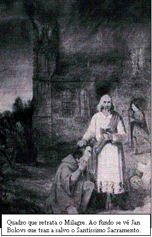
Fontes confiáveis
- Compilação de milagres eucarísticos (lista e PDFs) — inclui entrada sobre Stiphout (1342). LouisaPrays: Eucharistic Miracles (PDF).
- Relato histórico e folheto usado em exposições — versão PDF com descrição do episódio de Stiphout. TheRealPresence — Stiphout (PDF).
- Catálogo / compêndios de milagres eucarísticos (downloads e folhetos usados em mostras como a de Carlo Acutis). MiracoliEucaristici — Stiphout (folheto).
O Milagre Eucarístico de Boxmeer ocorreu por volta do ano de 1400, na igreja de São Pedro e São Paulo, na cidade de Boxmeer (Países Baixos). É um sinal impressionante da presença real de Cristo no Santíssimo Sacramento, especialmente diante da dúvida do sacerdote celebrante.
Durante a Missa, o sacerdote Arnoldus Groen teve dúvidas sobre a presença real no vinho consagrado. Após a consagração, o vinho começou a borbulhar como se estivesse fervendo e transbordou do cálice, escorrendo sobre o corporal. Segundo os relatos, o vinho se transformou em Sangue, que coaguliu formando um grande grumo, do tamanho de uma noz.
O sacerdote, aterrorizado, pediu perdão a Deus por suas dúvidas — e, então, imediatamente, as bolhas de Sangue pararam de subir. A relíquia do corporal manchado e do Sangue coagulado existe até hoje e é venerada pelos fiéis.
“Os documentos que narram esse milagre são numerosos: lápides, pinturas e relatos de pontífices como Clemente XI, Bento XIV, Pio IX e Leão XIII mostram uma devoção especial a esse sinal.”
Desenvolvimento histórico
- A relíquia do corporal e do Sangue permanece até hoje na igreja de São Pedro e São Paulo, em Boxmeer.
- Todos os anos, há uma procissão solene em memória do milagre, especialmente durante a festa de Corpus Christi.
- A devoção ao Sangue de Boxmeer foi reforçada ao longo dos séculos, com reconhecimento por vários papas.
Significado espiritual
Esse milagre sublinha a verdade da transubstanciação: o vinho consagrado realmente se transmutou em Sangue. Também convida cada fiel a confrontar suas dúvidas com humildade, reconhecendo que mesmo na incerteza Deus pode se manifestar com sinais claros.
Na exposição de Carlo Acutis
O milagre de Boxmeer está incluído na Mostra Internacional de Milagres Eucarísticos, idealizada por São Carlo Acutis, que catalogou e apresentou diversos milagres ao redor do mundo.
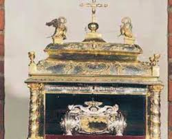
Fontes confiáveis
O Milagre Eucarístico de Boxmeer ocorreu por volta do ano de 1400, na igreja de São Pedro e São Paulo, na cidade de Boxmeer (Países Baixos). É um sinal impressionante da presença real de Cristo no Santíssimo Sacramento, especialmente diante da dúvida do sacerdote celebrante.
Durante a Missa, o sacerdote Arnoldus Groen teve dúvidas sobre a presença real no vinho consagrado. Após a consagração, o vinho começou a borbulhar como se estivesse fervendo e transbordou do cálice, escorrendo sobre o corporal. Segundo os relatos, o vinho se transformou em Sangue, que coaguliu formando um grande grumo, do tamanho de uma noz.
O sacerdote, aterrorizado, pediu perdão a Deus por suas dúvidas — e, então, imediatamente, as bolhas de Sangue pararam de subir. A relíquia do corporal manchado e do Sangue coagulado existe até hoje e é venerada pelos fiéis.
“Os documentos que narram esse milagre são numerosos: lápides, pinturas e relatos de pontífices como Clemente XI, Bento XIV, Pio IX e Leão XIII mostram uma devoção especial a esse sinal.”
Desenvolvimento histórico
- A relíquia do corporal e do Sangue permanece até hoje na igreja de São Pedro e São Paulo, em Boxmeer.
- Todos os anos, há uma procissão solene em memória do milagre, especialmente durante a festa de Corpus Christi.
- A devoção ao Sangue de Boxmeer foi reforçada ao longo dos séculos, com reconhecimento por vários papas.
Significado espiritual
Esse milagre sublinha a verdade da transubstanciação: o vinho consagrado realmente se transmutou em Sangue. Também convida cada fiel a confrontar suas dúvidas com humildade, reconhecendo que mesmo na incerteza Deus pode se manifestar com sinais claros.
Na exposição de Carlo Acutis
O milagre de Boxmeer está incluído na Mostra Internacional de Milagres Eucarísticos, idealizada por São Carlo Acutis, que catalogou e apresentou diversos milagres ao redor do mundo.
Fontes confiáveis
O Milagre Eucarístico de Ludbreg ocorreu no ano de 1411, na cidade de Ludbreg, localizada no norte da atual Croácia, dentro da capela do castelo da família Batthyány.
Durante a consagração, o sacerdote que celebrava a missa começou a duvidar da presença real de Cristo no vinho consagrado. No mesmo instante, o vinho no cálice transformou-se visivelmente em sangue humano.
Assustado com o ocorrido, o padre interrompeu a celebração e decidiu esconder o cálice com o sangue milagroso dentro da parede atrás do altar, pedindo segredo ao operário que realizou a obra. O sacerdote só revelou o acontecimento pouco antes de morrer, permitindo que o milagre fosse conhecido.
“O Senhor confirmou com um sinal visível aquilo que a fé da Igreja sempre professou.”
Reconhecimento da Igreja
Após investigações e testemunhos, o Papa Leão X autorizou oficialmente a veneração do Sangue Milagroso em 14 de abril de 1513, por meio de uma bula papal. Desde então, Ludbreg tornou-se um importante local de peregrinação.
Veneração e celebrações
Anualmente, no início de setembro, a cidade celebra a festa conhecida como “Sveta Nedilja” (Santa Domingo), com missas, procissões e momentos de oração em honra ao milagre ocorrido em 1411.
Curiosidades
- Ludbreg é conhecida como o Santuário do Preciosíssimo Sangue de Cristo.
- O milagre é oficialmente reconhecido pela Igreja Católica.
- Faz parte da exposição internacional dos Milagres Eucarísticos organizada por São Carlo Acutis.
Fontes
- Site oficial de turismo religioso da Croácia – Santuário do Preciosíssimo Sangue de Cristo (Ludbreg)
- Perpetual Eucharistic Adoration – Eucharistic Miracle of Ludbreg
- This Is Jesus – Eucharistic Miracle of Ludbreg (1411)
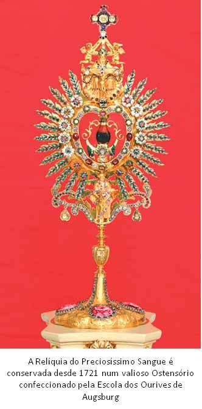
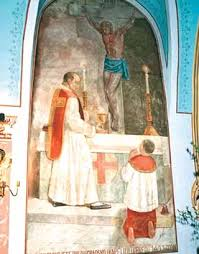